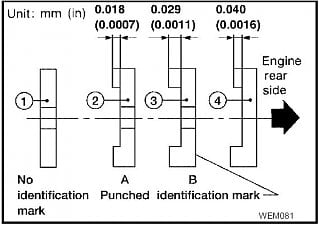

-
I'm putting my VG30E cams into my VG33E and somebody on the Frontier forum identified for me that I might need to swap these plates (provide the correct end-play for the cams in the head). Anybody run into issues doing this?
As it turns out, there are 4 different "sizes" of these plates, and I did find that one of my cams is not able to turn smoothly after a quick test install (not torquing the locating plate bolt at the rear). The locating plate I have for the original VG33E cam, did not have any marking on it (suggesting the default flat plat). It caused the new VG30E camshaft to bind. The only cam locating plate offered with MORE clearance, is one marked with the letter "C", indicating 0.0008" clearance and additional end-play. I happened to have one of theses from another engine, so I used it and it installed and allowed the cam to move smoothly, however it is still tight. I will measure with a dial indicator to see if it meets the 0.0012"-0.0024" specification.
The problem I'm finding is…there aren't any locator plates that offer MORE clearance; only those with LESS clearance to tighten things up if they get loose.
Also, the FSM may have some errors. I noticed that the 2000 Xterra manual (that's what the engine came from) and the 84-87 300ZX manuals all differ from later years FSM (Xterra, Frontier, etc.) such that the specifications corresponding to each marking (a specific letter or NO marking at all) are different. For example:
1984-1987 Nissan 300ZX, 2000 Nissan Xterra, 1999-2000 Frontier FSM suggests:
#1 - Marked "C". Measures 0.02mm (0.0008")
#2 - No identification. No Measurement.
#3 - Marked "A". Measures 0.03mm (0.0012")
#4 - Marked "B". Measures 0.06mm (0.0024")
2001-2004 Nissan Xterra, Frontier FSM suggests:
#1 - No identification. No Measurement.
#2 - Marked "A". Measures 0.018mm (0.0007")
#3 - Marked "B". Measures 0.029mm (0.0011")
#4 - There is NO indication what the marking is on this cam plate. Measures 0.040mm (0.0016")
Also, there is reference to something called the Aera Engine Buildings Association that also published a document suggesting the locator plate options are exactly the same as published in the Nissan FSM's from 2001 and beyond.
Aera suggests:
#1 - No identification. No Measurement.
#2 - Marked "A". Measures 0.018mm (0.0007")
#3 - Marked "B". Measures 0.029mm (0.0011")
#4 - There is NO indication what the marking is on this cam plate. Measures 0.040mm (0.0016")
I've attached the images in each literary reference for your review.
Anyone know what the heck is going on here and if I might have to machine one of my own plates down a bit further?
Thanks!

Copyright © 2006–. All rights reserved. Privacy Policy